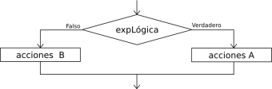

If-Then

The sequence of instructions executed by an If-Then-Else instruction depends on the value of a logical condition.
Si <condición> Entonces
<instrucciones>
SiNo
<instrucciones>
FinSi
When this instruction is executed, the condition is evaluated and the corresponding instructions are run: the instructions after Entonces if the condition is true, or the instructions after SiNo if the condition is false. The condition must be a logical expression that, when evaluated, returns Verdadero or Falso.
The Entonces clause must always appear, but the SiNo clause is optional. In that case, if the condition is false no instruction is executed and the program continues with the next instruction.
The Triangle example reads the lengths of the three sides of a triangle and uses this structure to determine which side is the largest, and then verify whether it is a right triangle.